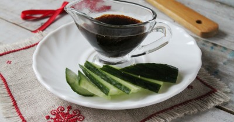

Соус унаги в домашних условиях

Ингредиенты
- Соевый соус – 40 мл.
- Оливковое масло - 50 мл.
- Имбирь - 5 гр.
- Мёд - 10 гр.
- Крахмал - 3 гр.
Рецепт приготовления
- Для приготовления традиционного японского соуса унаги возьмите соевый соус, мед (лучше жидкий, но настоящий), корень имбиря, оливковое масло.
- Для соуса понадобится сок имбиря, поэтому нужно его сначала сделать. Это очень просто. Корень имбиря достаточно сочный, поэтому легко отжимается после того, как натрете имбирь на мелкой терке. Следующим этапом натрите кусок корня и отожмите сок через марлевый отрез, сложенный вдвое или можно просто поместить жмых в ситечко и надавить ложкой, сок легко потечет.
- В сотейник или кастрюльке смешайте соевый соус, мед и оливковое масло, прогрейте, но не кипятите. Сладость достигается из-за добавления меда, чтобы не потерять его полезных свойств соус не рекомендуется кипятить, лишь прогревать.
- Добавьте сок имбиря и крахмал. Снова хорошо перемешайте и уваривайте без кипячения на медленном огне до загустения. Крахмал добавляйте картофельный, если используете кукурузный, возьмите его в два раза больше.
- Вот и все! Соус унаги готов! Его очень вкусно подавать к жареной рыбе, курице, просто с овощной нарезкой. Всем продуктам он придает необычную пряную и острую сладость, что делает их привычный вкус не сразу узнаваемым и привлекательным.
Вернуться к списку блюд